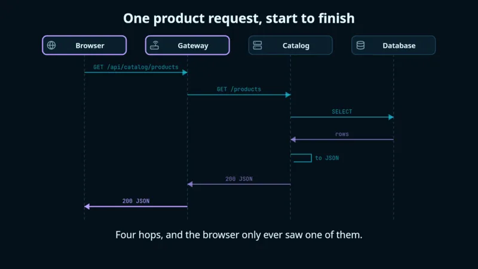
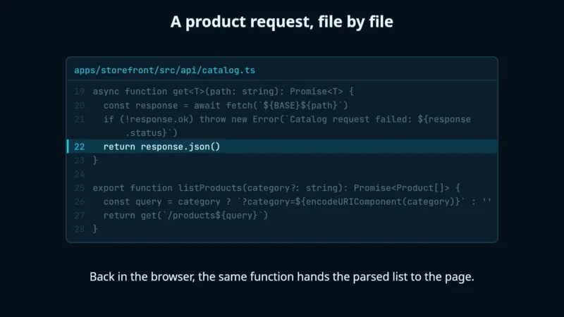
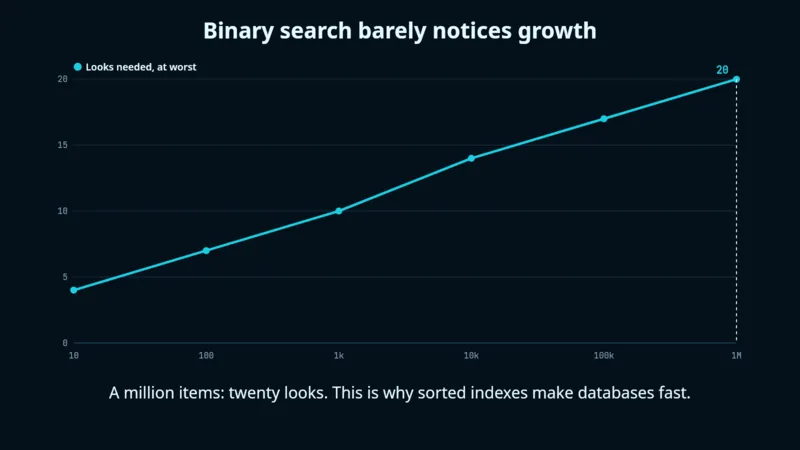
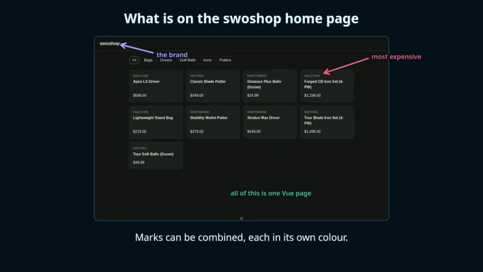
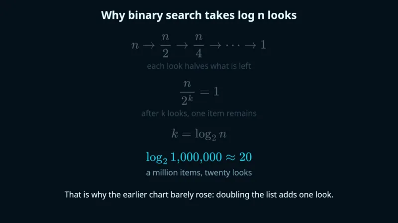
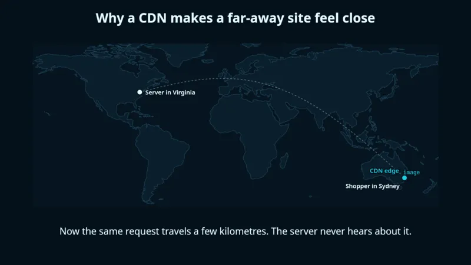
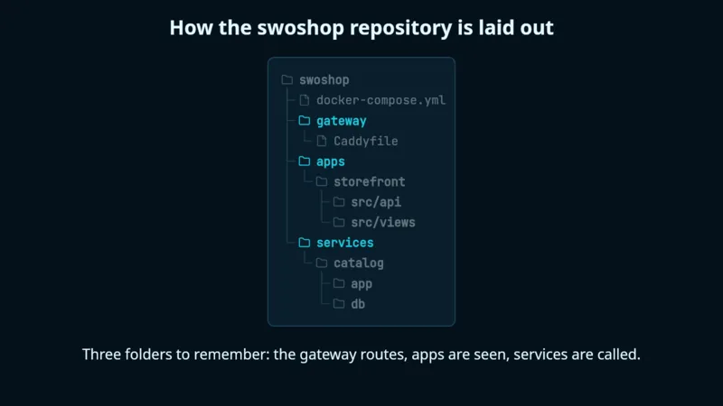
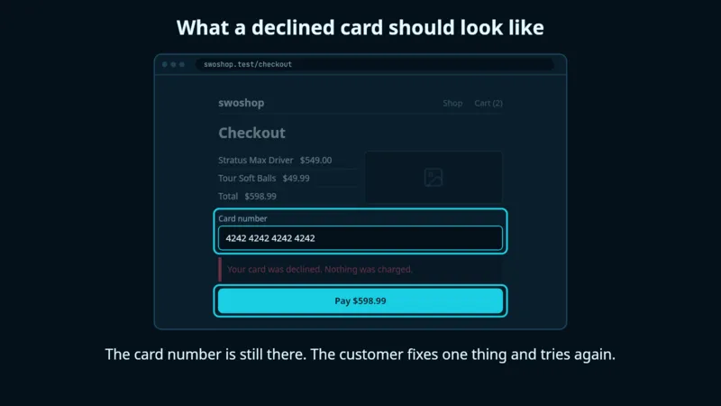
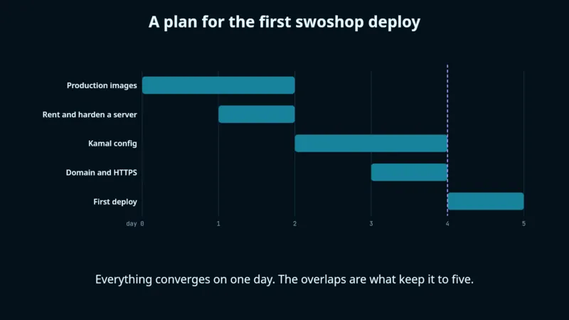

0:00
0:41
Turn any explanation into a shareable diagram, chart or code walkthrough that plays step by step.
One line in Claude Code. Free and open source.
A real reel in the SwoReel app. Claude wrote it from one request: "show how a request reaches the database through the gateway."
How it works
There is nothing to draw and no timeline to edit. A reel is a small file Claude writes for you, and everything about it can be changed by asking.
Describe what you want explained. Claude picks the right kind of picture, writes the reel and checks its own render before showing you.
Make a reel of how our checkout handles a declined card.
It plays in a pane beside the chat. Point at what you see and say what to change; Claude edits that step and shows it again.
Shorten this caption, and add a step for the retry.
Export a video, one image or an image per step, in wide, tall or square. Put it in a post, a doc, a slide or a message.
Export it as a tall video and a set of stills.
What it makes
Each one builds up a step at a time, with a caption for every step. These are stills from real reels, exactly as they export.









Also: system and request flows, state machines, array and algorithm steps, and free-form sketches.
Install
SwoReel works only inside Claude Code, so Claude can install it. Paste one line and it does the rest, telling you what it is about to do and asking before it runs anything.
Recommended
Set up SwoReel for me. Follow the steps at https://tomswokowski.github.io/sworeel/setup.md
That is all. When it finishes, restart Claude Code once and ask for your first reel.
You can read exactly what Claude is told to do.
Or do it by hand
The same setup as three steps, if you would rather run it yourself. About five minutes.
SwoReel needs Node.js 22.18 or newer to run, and ffmpeg to make video. Images work without ffmpeg.
# macOS brew install node ffmpeg # Windows winget install OpenJS.NodeJS Gyan.FFmpeg # Linux: use your package manager, for example sudo apt install nodejs ffmpeg
Run these two commands inside Claude Code. The first tells it where SwoReel lives; the second installs it.
/plugin marketplace add tomswokowski/sworeel /plugin install sworeel@tomswokowski
Then ask for a reel: "make a reel of how a request reaches the database." Type /sworeel any time to browse and play what you have made.
The window shown at the top of this page: browse, play, organise and export your reels. It works with the plugin from the step above, so install that first.
Open the file and drag SwoReel to Applications. One download for Apple silicon and Intel Macs.
The installer is not signed yet, so Windows shows a warning. Choose More info, then Run anyway.
These are always the newest version.
Make it yours
The defaults are ready to share as they are. When you want something different, there is no settings maze: tell Claude and it changes.
A small watermark, such as your handle, in the corner of everything you export.
Put @me on my exports.
Reels are drawn in ten colours you can change, for every reel or just one.
Match our brand: navy and orange, on a light background.
Tell Claude once how you like your reels and it keeps to it from then on.
Always keep captions under ten words.
No. Everything works from Claude Code: making reels, playing them beside the chat, exporting and organising. The app is for when you would like a window with thumbnails, a scrubber and drag and drop.
That command comes with the plugin, so install the plugin in Claude Code first, then start the app again. If Node.js is missing or older than 22.18, the command cannot start; install or update it.
In the app, open Settings and choose Export All Reels, or ask Claude to bundle them. You get one .sworeel file holding your reels and their pictures. Import it on the other computer. Nothing already there is replaced.
The plugin updates through Claude Code: /plugin update sworeel@tomswokowski. For the app, download the newest version from this page and install it over the old one. Your reels and settings are kept.
Yes. SwoReel is free and open source under the MIT licence. It is made exclusively for Claude Code, so you need Claude Code to use it.